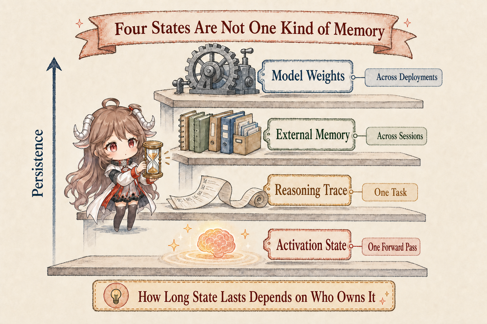

Evidence boundary. Activation readouts can reveal internal directions correlated with concepts and sometimes causally involved in behavior. They do not provide a word-for-word transcript of all computation. Chain of thought is not such a transcript either. This series keeps observation, causal intervention, and claims about minds separate.
The full chain: a model never touches the world directly
An agent action crosses at least six layers. Weights provide durable capabilities and tendencies. The current input produces activations in the residual stream. Some computation may remain unspoken. The decoder emits text or a structured tool call. A runtime validates permissions and invokes the tool. The environment returns a result that becomes new context.
“The model chose to delete a file” and “the system deleted a file” are therefore different claims. The latter also depends on a tool schema, approval rules, a sandbox, retry policy, and execution feedback. J-space or persona directions can help explain variables on the model side; they do not replace runtime authorization.
Four states, four persistence horizons

| Carrier | Typical lifetime | What it can explain | Do not confuse it with |
|---|---|---|---|
| Activation | One forward pass | What the current computation represents or routes | Long-term memory |
| CoT / trace | Persistent only when emitted or logged | The reasoning and actions the model chose to expose | All internal computation |
| External memory / skill | Across turns and sessions | History, experience, procedures, reusable artifacts | A weight update |
| Weights | Across deployments until retraining | Capabilities, priors, and stable behavioral tendencies | A thought in one run |
This separates the series from two adjacent topics. Agent Memory studies how external state is written, retrieved, and assembled into a model view. Agent self-evolution often changes prompts, skills, memories, and workflows. A change reaches the slowest layer only when training updates the weights.
Five chapters, one problem map
Separate model internals, visible traces, external memory, and execution.
02 · WorkspaceJ-spaceA small, readable and writable workspace-like representation linked to flexible reasoning.
03 · ReadoutReasoning observabilityCompare CoT monitoring, NLA, SAEs, and latent reasoning.
04 · IdentityPersona and self-modelHow post-training selects and stabilizes a default Assistant role.
05 · InterventionSteering and auditingConnect inference-time intervention, reflection training, and deployment audits.
Why J-space deserves a chapter
Anthropic's J-space study does not claim to have found “thought itself.” It identifies a small, vocabulary-interpretable sparse subframe in the residual stream. It passes tests for report, directed modulation, internal reasoning, flexible generalization, and selectivity: concepts can be read and manipulated, with downstream causal effects, while most automatic processing remains outside it.
That fills a gap in typical agent analysis. Behavioral evaluations tell us whether a task succeeded. Traces tell us what was said and which tools were called. External memory tells us what persisted. J-lens, NLA, and SAEs instead ask what observable structure exists before output. Their answers are incomplete, but they let monitoring graduate from a single log to multiple kinds of evidence.
Three immediate lessons for agent design
Never let one observation channel own the truth
Chain of thought may omit decisive information, an activation verbalizer may confabulate, and an SAE may split one concept across features. A serious audit checks final behavior, tool traces, visible reasoning, internal readouts, and environment outcomes together. Disagreement is itself an event worth investigating.
Split “self-evolution” into three control planes
Writing a memory or skill evolves an external artifact. Activation steering temporarily alters inference state. Reflection training changes behavioral tendencies in the weights. Each has a different rollback cost, validation method, and permission model.
Treat internal explanations as instrument readings
An instrument can be calibrated, compared, and used in counterfactual experiments; it is not the system's autobiography. The strongest case usually comes from readout, intervention, ablation, behavioral change, and cross-context replication converging on the same mechanism.